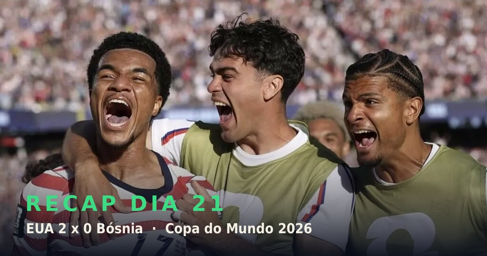

Só há um lugar por onde começar o Dia 21: o Levi's Stadium, na Califórnia. Em uma noite decisiva para Mauricio Pochettino, os Estados Unidos venceram a Bósnia e Herzegóvina por 2 a 0, conquistaram sua primeira partida de mata-mata em Copas desde 2002 e carimbaram vaga nas oitavas. O adversário será a Bélgica, em Seattle, na segunda-feira.
Balogun abriu o placar e Malik Tillman ampliou numa cobrança de falta. Nem mesmo o cartão vermelho aplicado a Balogun, após revisão do VAR na etapa final, tirou a equipe do rumo — o time jogou com coragem, intensidade e uma crença inabalável do início ao fim.
Tudo se encaixou no momento certo. Desde a goleada por 4 a 0 sobre o Paraguai — que, aliás, eliminou a Alemanha na sequência — foi como se um interruptor tivesse sido acionado. A perda de Balogun por suspensão contra a Bélgica dói: sua presença como referência de ataque deu ao time um poder de decisão que faltava, sobretudo em relação à Copa anterior.
E há muito a valorizar além dele: o lateral-direito Alex Freeman, de apenas 21 anos, o volume incansável de Antonee Robinson pela esquerda e o trio de meio-campo formado por Weston McKennie, Tyler Adams e Tillman, que se completam com energia, dinamismo e classe. A marcação por pressão é agressiva e incomoda qualquer adversário — mas os três também sabem jogar.
O backheel de Tillman que lançou Christian Pulisic na área bósnia, ainda no primeiro tempo, foi o retrato da confiança do meia; depois veio a falta certeira para acalmar os nervos. Talvez diga tudo o fato de Pulisic, o rosto do futebol americano, só ser lembrado agora: o time é claramente melhor com ele em campo, mas o recado é que este EUA é, acima de tudo, uma equipe. E das boas.
Perdendo por 1 a 0 já no fim do segundo tempo, a Inglaterra de Thomas Tuchel encarava o risco de uma eliminação humilhante diante da RD Congo — até Harry Kane aparecer. Primeiro de cabeça, sua marca registrada; depois com um chute violento de perna direita. Dois gols que viraram o jogo praticamente sozinhos. O próximo desafio será o México, no Azteca.
É fácil esquecer como a narrativa em torno de Kane era diferente na última grande competição inglesa. Na Eurocopa de 2024, na Alemanha, ele foi alvo de críticas pesadas — havia quem pedisse sua saída do time em vez de exaltá-lo. Dividiu a Chuteira de Ouro com outros cinco jogadores após marcar apenas três vezes e virou uma espécie de bode expiatório, parecendo cansado e pesado. Na final contra a Espanha, foi substituído logo após a hora de jogo, mesmo com a Inglaterra perdendo por 1 a 0.
Aos 30 anos à época, capitão e maior artilheiro da história da seleção inglesa, Kane era um atacante prolífico e respeitado — mas raramente entrava na conversa sobre os quatro ou cinco melhores do mundo. Que tenha levado 15 anos de carreira para conquistar seu primeiro título, algo que diz mais sobre seu tempo no Tottenham do que sobre sua capacidade de fazer gols, talvez ajude a explicar. Sua melhor posição na Bola de Ouro foi o 10º lugar.
Nos últimos dois anos, porém, ele elevou o próprio patamar. Marcando em ritmo impressionante no Bayern de Munique — incluindo uma temporada de 58 gols — passou a merecer ser citado ao lado dos maiores. Thierry Henry chegou a chamá-lo de "Sir Harry" em sua análise na Fox.
Fica a impressão de que, por anos, parte da Inglaterra o subestimou.
O maior drama do dia aconteceu em Seattle. A Bélgica perdia por 2 a 0 quando faltavam quatro minutos para o fim — e então marcou dois gols em apenas 161 segundos para forçar a prorrogação. No tempo extra, Youri Tielemans converteu um pênalti com incríveis 124 minutos e 44 segundos no relógio.
E não foi o único enredo forte da rodada de mata-mata: a França de Mbappé e Michael Olise brilhou em uma atuação ofensiva de gala, e o México lembrou a todos por que o Azteca é um lugar tão especial para sua seleção.
Talvez — só talvez — a expansão para 48 seleções não tenha sido tão ruim assim, ainda que apenas pela dose extra de drama. As dúvidas seguem legítimas: por que passar por 72 jogos de fase de grupos para chegar ao mesmo número de times da Copa anterior? E não há risco de premiar o fracasso ao classificar oito terceiros colocados?
Mesmo assim, é difícil ignorar os benefícios dos 16 confrontos eliminatórios a mais e de toda a tensão que vem com eles.
Talvez não continue assim. Talvez a qualidade caia quando todos estiverem esgotados por conta de um calendário implacável. Mas, por ora, é diversão pura — justamente pela quantidade de imprevisibilidade em jogo, algo de que o futebol moderno anda carente.
O grande duelo é em Toronto, onde Portugal encara a Croácia. Ou, dito de outra forma, Cristiano Ronaldo reencontra Luka Modric — soma de idades: 81 anos; soma de jogos pelas seleções: impressionantes 432. Ex-companheiros de Real Madrid e dois dos maiores de sua geração, ambos caminham para o fim. Modric deve se despedir do futebol internacional após esta Copa; de Ronaldo, nunca se sabe.
Portugal ainda não engrenou: empatou por 1 a 1 com a RD Congo na estreia, goleou o Uzbequistão por 5 a 0 (que voltou para casa com zero ponto e 11 gols sofridos) e depois empatou, com certa sorte, contra a Colômbia.